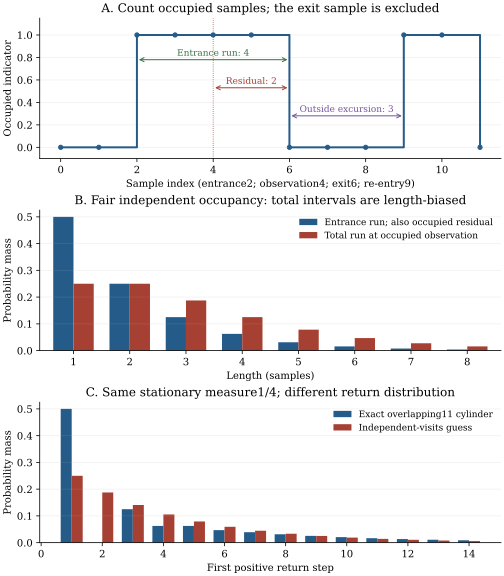

Chapter 25 · Lecture 29
Sojourn, escape, and dynamical recurrence
An observer starts a stopwatch when a trajectory enters a cell. Another starts at an arbitrary occupied snapshot. A third asks for the next positive return, counting continued occupancy at the next sample. These observers measure different random variables. Once their conditioning and endpoints are fixed, stationary block probabilities yield exact escape and return laws. Finite invariant measure guarantees recurrence; ergodicity gives a reciprocal-measure mean without making visits independent.
The full caption track of lecture 29 was read sequentially. One low-resolution frame at 47:57 was inspected for departure conditioning; the denominator is partly visible and partly occluded. The discrete block definitions were checked against the complete spoken sequence and independently rederived below. Poincaré recurrence and Kac's mean identity are named separately. The continuous-time discussion states an explicit crossing-rate hypothesis rather than assuming a universal sampling limit.
25.1 Specify the target, preparation, and endpoints L29 1:46
Let $T$ preserve a probability measure $\mu$ on a measurable state space $\Omega$. Fix a measurable cell $C$ of measure $q=\mu(C)$ with $0\lt q\lt1$, and write $B=\Omega\setminus C$. Start the ensemble with $x\sim\mu$, so the binary indicator $I_n=\mathbf1_C(T^nx)$ is stationary. Conditional initialization in $C$ uses $\mu_C(A)=\mu(A\cap C)/q$. A sampling step has physical duration $\Delta\gt0$; all integer lengths below are in steps until multiplied by $\Delta$.
The first positive return is $\tau_C^+=\inf\{n\geq1:I_n=1\}$ for $I_0=1$. An immediate repeat at step one counts. The first exit from $B$ is $E_B=\inf\{n\geq1:I_n=1\}$ for $I_0=0$. Although the formulas look similar, their conditional initial measures differ. Infinite values are allowed until return or escape is established. Residence at an entrance counts all occupied samples starting with that entrance and excludes the first outside sample. A run of ones at indices 2,3,4,5 has length four and exits at index 6. From observation index 4 its forward residual length is two.
25.2 Escape is a first difference; return is a second L29 3:11
Define the joint outside-block probabilities $$W_0=1,\qquad W_n=\Pr(I_0=\cdots=I_{n-1}=0),\quad n\geq1.\tag{25.1}$$ Thus $W_1=1-q$. The sequence decreases to a limit $W_\infty\geq0$. Decrease alone does not make that limit zero. The conditional outside survival is $H_n=\Pr(E_B\gt n\mid I_0=0)=W_{n+1}/(1-q)$ for $n\geq0$. These are tail probabilities of nested events, not masses of mutually exclusive outcomes.
Outside escape at $n$ is survival through $n-1$ minus survival through $n$, yielding (25.2). For the return tail with $n\geq1$, subtract the event that indices $0,\ldots,n$ are all outside from the event that $1,\ldots,n$ are outside. By stationarity their probabilities are $W_{n+1}$ and $W_n$. The difference forces $I_0=1$ while excluding all positive returns through $n$. Dividing by $q$ gives the tail formula; at $n=0$ it is $(W_0-W_1)/q=1$. Differencing successive tails gives (25.3), including $n=1$. Equivalently, for $n\geq2$ expand the endpoint factors in $\mathbb E[I_0\prod_{j=1}^{n-1}(1-I_j)I_n]$ and use stationarity for the shifted blocks. ∎
At $n=1$, the numerator is $1-2(1-q)+\Pr(I_0=I_1=0)=\Pr(I_0=I_1=1)$. This endpoint check prevents losing immediate returns. Since every $R_n\geq0$, the first differences $D_n=W_n-W_{n+1}$ form a nonincreasing nonnegative sequence. Thus a stationary outside-block sequence is constrained more strongly than mere monotonicity: its second differences are nonnegative. An arbitrary decreasing list cannot automatically be used as these block probabilities.
If $W_\infty=0$, the outside escape law is normalized and its mean is $$\mathbb E[E_B\mid I_0=0]=\frac1{1-q}\sum_{n=1}^\infty W_n,\tag{25.4}$$ by summing the survival tail. This sum may diverge. A sequence tending to zero need not have a finite sum. The return mean will involve a different telescoping series and can remain finite.
25.3 Finite invariant measure forbids a positive wandering part
Let $F=\{x\in C:T^nx\notin C\text{ for every }n\geq1\}$ be the nonreturning part. The inverse images $T^{-j}F$, $j\geq0$, are pairwise disjoint. Indeed, if $x$ lay in both $T^{-i}F$ and $T^{-j}F$ with $i\lt j$, then $T^ix\in F$ would return to $F\subset C$ after $j-i$ steps, contradicting its definition. Invariance gives each inverse image measure $\mu(F)$. Finite total measure therefore forces $\mu(F)=0$.
A point of $C$ with finitely many future visits has a last visit, after which it belongs to $F$. All such initial points lie in the countable union $\bigcup_{j\geq0}T^{-j}F$, a null set by invariance. The remaining points return infinitely often. ∎
This is a guarantee of eventual repeated visits to the specified measurable set, not an upper bound on waiting time or an exact return to every point. Translation $T(x)=x+1$ on the real line preserves length but has infinite total measure; an interval of length less than one never receives a positive return from its own points. The finiteness hypothesis is consequential. See Bruin, Section 7, Theorem 12, printed p. 22, for the finite-probability recurrence statement.
25.4 Kac's mean identity is a telescoping tail sum L29 36:08
The event $G=\bigcap_{j\geq0}T^{-j}B$ consists of points never visiting $C$, and has measure $W_\infty$ by continuity for decreasing measurable sets. We have $G\subset T^{-1}G$; invariance gives equal measures, so they agree modulo a null set. Ergodicity forces $\mu(G)$ to be zero or one. Because $G\subset B$ with $\mu(B)=1-q\lt1$, it must be zero.
For a positive integer-valued time, including a possible infinite value, its expectation is the sum of its survival tails by monotone convergence. Proposition 25.1 gives the exact finite partial sum $$\mathbb E_{\mu_C}[\min(\tau_C^+,N)]=\sum_{n=0}^{N-1}\frac{W_n-W_{n+1}}q=\frac{1-W_N}q.$$ Let $N\to\infty$. Since $W_N\to0$, the mean equals $1/q$ and is finite. Multiplying by $q$ yields the unconditioned integral over $C$. No cancellation of conditionally convergent signed series or assumption of independent excursions is needed. ∎
The conditional normalization matters: $\int_C\tau_C^+d\mu$ equals one, while the conditional mean equals $1/q$. Without ergodicity the same tail proof yields $(1-W_\infty)/q$, which can be smaller than $1/q$. For the identity map, every point of $C$ returns at step one and $W_\infty=1-q$, giving mean one. Finite-measure recurrence still holds. Bruin, Section 7, Lemma 4, printed p. 23, states the ergodic Kac formula; the stationary-tail proof above also covers noninvertible maps.
If a finite ergodic system has $M$ equally weighted configurations, the mean return to a specified configuration is $M$ samples. For a model of $N$ independent binary degrees of freedom with uniform invariant weights, $M=2^N$. This illustrates how a certain eventual recurrence can have an enormous mean. It is a finite-state model under explicit equilibrium weights, not a claim that every physical gas is uniformly distributed over a finite list of configurations.
25.5 Entrance runs and arbitrary-time intervals have different laws
Consider an iid binary stationary record indexed by all integers, with occupied probability $q$. An entrance at index zero means $I_{-1}=0,I_0=1$. Let $L\geq1$ be the occupied-run length, so $I_0,\ldots,I_{L-1}=1$ and $I_L=0$. Conditioning on the entrance leaves future symbols independent, hence $$\Pr(L=n\mid\text{entrance})=(1-q)q^{n-1},\qquad \mathbb E L=\frac1{1-q}.\tag{25.6}$$ This two-sided record is an observation ensemble; defining its past does not require an invertible one-sided doubling map. It can be realized by a two-sided Bernoulli shift, or by observing a sufficiently long stationary bit record away from its boundaries.
Now select an arbitrary occupied sample and ask for the total length $L^*$ of its containing run, including the part before the observation. A run of length $n$ offers $n$ possible occupied observation sites, so its law is length-biased: $$\Pr(L^*=n\mid I_0=1)=\frac{n\Pr(L=n)}{\mathbb E L}=n(1-q)^2q^{n-1}.\tag{25.7}$$ The geometric sums $\sum nq^{n-1}=(1-q)^{-2}$ and $\sum n^2q^{n-1}=(1+q)/(1-q)^3$ give $$\mathbb E[L^*]=\frac{\mathbb E[L^2]}{\mathbb E L}=\frac{1+q}{1-q}.\tag{25.8}$$ It exceeds the entrance mean by $q/(1-q)$. Repeatedly sampling occupied snapshots overrepresents long intervals even though the underlying symbols are independent.
The forward residual $R$ counts occupied samples from the observation through the end of the run, including the current one. For iid symbols, $\Pr(R=n\mid I_0=1)=(1-q)q^{n-1}$, so $\mathbb E R=1/(1-q)$, equal to the entrance mean. This memoryless equality does not remove the length bias of the total interval. For a general stationary collection of finite runs with entrance law $L$ and finite $\mathbb E L$, counting the residuals $1,\ldots,n$ in a run of length $n$ gives $$\mathbb E R=\frac{\mathbb E[L(L+1)]}{2\mathbb E L}.\tag{25.9}$$ The residual can have infinite mean when the entrance mean is finite but the second moment diverges.
This resolves the apparent conflict between a finite mean return and an infinite mean escape from an arbitrary outside snapshot. For example, construct a stationary alternating renewal record with every occupied run of length one and outside-run lengths $L$ having finite mean but infinite second moment. One may choose a positive-integer law proportional to $n^{-1-\beta}$, $1\lt\beta\lt2$. A stationary preparation weights cycles by their lengths and places the observation uniformly within the selected cycle; finite mean cycle length permits its normalization. Returns from occupied samples have mean $1+\mathbb E L$, while an arbitrary outside sample has forward residual mean (25.9), which is infinite. The two experiments average different distributions, rather than conditioning one on an event of probability zero.
25.6 Exclude immediate stays by conditioning on a departure L29 45:30
For finer sampling of a continuous trajectory, most successive observations inside a cell remain inside it. Kac's positive-return time legitimately counts those immediate stays; multiplying its mean by $\Delta$ gives $\Delta/q$. To measure an excursion after leaving, change the stopping event and preparation instead of taking that quantity as a continuous-time excursion duration.
Let $D=\{I_0=1,I_1=0\}$ be an observed departure, and set $d=\Pr(D)$. Stationarity and the outside-block definitions give $d=W_1-W_2$. For $0\lt q\lt1$ in an ergodic system, $d\gt0$: if it vanished, the cell would be invariant modulo null sets. Conditional on $D$, let $U=\tau_C^+-1\geq1$ be the number of outside samples starting at index one, until return at index $U+1$. Then $$\Pr(U=n\mid D)=\frac{qR_{n+1}}d= \frac{W_n-2W_{n+1}+W_{n+2}}d,\quad n\geq1.\tag{25.10}$$ Its normalization is $\sum_{n\geq1}qR_{n+1}/d=q(1-R_1)/d=1$, because $q(1-R_1)=d$. The endpoint shift is essential: $n$ measures from the first outside sample, while the return occurs $n+1$ steps after the last occupied sample.
Under the ergodic hypotheses of Theorem 25.3, $$\mathbb E[U\mid D]=\frac qd\sum_{m\geq2}(m-1)R_m= \frac{1-q}d.\tag{25.11}$$ The elapsed steps from the last occupied sample at zero to re-entry are instead $U+1$, with mean $1+(1-q)/d$. A full entrance-to-next-entrance cycle includes both occupied and outside runs and has mean $1/d$ in an ergodic stationary two-sided record with positive transition rate. These quantities must not share an unlabeled name such as recurrence time.
This is the departure-conditioned modification discussed in the lecture in connection with Smoluchowski. A useful continuous-time limit requires a dynamical crossing assumption. If observed departure probability satisfies $d(\Delta)\sim J\Delta$ for a finite positive crossing rate $J$ per unit physical time, then the mean outside excursion approaches $(1-q)/J$ and the full entrance cycle approaches $1/J$. Such scaling may fail when arbitrarily rapid recrossings dominate. The published Balakrishnan–Nicolis–Nicolis study, Physical Review E 61, 2490 (2000), abstract, specifically contrasts observation-resolution limits in deterministic and stochastic dynamics. Its abstract motivates this boundary; formulas (25.10)–(25.11) follow from the discrete definitions here, without relying on an uninspected continuous-time formula.
25.7 Correlated visits can keep the same reciprocal mean L29 53:51
In the natural half-interval observation of the doubling map, visits are iid with $q=1/2$. The outside blocks have $W_n=(1-q)^n$, so (25.3) gives $R_n=q(1-q)^{n-1}$, the geometric law of mean $1/q$. This agrees with Kac but uses much more information than Kac's mean identity.
Instead take the cylinder cell $C=[3/4,1)$, corresponding to two successive binary digits 11. Its measure is $1/4$. Successive observations overlap in one digit, so the visits are correlated. Given an initial 11, the next visit occurs immediately if the next digit is one, with probability $1/2$. If that next digit is zero, a visit at step two is impossible because its first digit is zero. Thus $R_1=1/2$ and $R_2=0$, already excluding the geometric law of parameter $1/4$.
For the entire return law, track whether the last digit is zero or one before completing a new 11. In the row-state convention used just in this calculation, the substochastic transition matrix and success vector are $$K_{\mathrm{surv}}=\begin{pmatrix}1/2&1/2\\1/2&0\end{pmatrix},\qquad r=\begin{pmatrix}0\\1/2\end{pmatrix}.$$ A missing row mass is absorption on completing 11. With row $e_1=(0,1)$, because the initial occurrence ends in one, $R_n=e_1K_{\mathrm{surv}}^{n-1}r$. The first six masses are $1/2,0,1/8,1/16,1/16,3/64$. Row notation is explicit here; no column convention for the chapter 5 state probabilities is being silently transposed.
Let $h_0,h_1$ be expected additional bits to completion from trailing digit zero or one. Conditioning on the next bit gives $h_0=1+(h_0+h_1)/2$ and $h_1=1+h_0/2$. Solving yields $h_0=6,h_1=4$. Finiteness is justified independently: in every two newly generated bits there is probability $1/4$ of 11, so failure probability over disjoint two-bit blocks is at most $(3/4)^m$. The return mean four agrees with $1/\mu(C)$, despite a strongly nongeometric distribution. A stationary measure fixes this mean under ergodicity but does not fix all return statistics.
25.8 Computational laboratory: use the right sampling unit
The lab generates one million iid occupancy symbols with $q=0.7$ and seed 2026110829. It extracts complete occupied runs, excluding runs truncated by either record boundary. Each complete run contributes once to the entrance average, contributes its length to occupied sampling weights, and contributes residuals $1,\ldots,L$ to the residual average. These weighted sums avoid treating repeated snapshots of one run as separate independent intervals.
A separate exact experiment enumerates all $2^{16}$ binary words, conditions on an initial 11, and records the first subsequent 11 through step 14. Every probability is compared with the matrix formula $e_1K_{\mathrm{surv}}^{n-1}r$. A backward linear solve independently checks the exact mean four. The unreturned fraction at step 14 is retained; the finite list is not renormalized into a complete law and its truncated mean is not labeled the infinite-horizon mean.
Complete occupied runs: 210221 Entrance mean: sample=3.328112; exact=3.333333 Occupied-time total-run mean: sample=5.647062; exact=5.666667 Occupied-time residual mean: sample=3.323531; exact=3.333333 Cylinder11 return masses n=1..6: [0.5, 0.0, 0.125, 0.0625, 0.0625, 0.046875] Cylinder11 mean from backward equations: 4.000000 Cylinder11 unreturned at step14: 0.03723145

def return_mass_from_blocks(previous, current, following, cell_measure):
return (previous-2*current+following)/cell_measure
print(return_mass_from_blocks(1.0, 0.5, 0.25, 0.5))The function evaluates (25.3) from valid stationary block inputs and prints 0.5; it has no file effects. It does not validate arbitrary supplied numbers as realizable block probabilities. The full lab writes JSON and its report, overwrites them on rerun, and uses no network. Run it before the generator with the declared dependencies. Its simulated symbols represent the invariant binary ensemble, not a long orbit computed in fixed floating-point precision.
25.9 What the recurrence identities do and do not determine
The finite-measure recurrence proof needs measure preservation but no independent visits. Kac's reciprocal mean additionally uses ergodicity, or an equivalent full-saturation condition for the chosen target. Stationary block differences determine escape and return laws only when the correct block sequence is known. A target's measure alone generally gives no return distribution. Arbitrary-time residual residence and entrance-conditioned runs differ, and reducing the physical sampling interval changes which immediate stays are counted. In an experiment, record the target, initialization, direction of crossing, sampling interval, endpoint convention, and censoring rule before comparing a fitted distribution with these identities.
25.10 Exercises with worked solutions
Exercise 25.1 — Certain recurrence without the reciprocal mean (conceptual)
On a uniform probability interval let $T$ be the identity and let $\mu(C)=0.2$. Which recurrence conclusions hold, and why is the mean positive return not five?
Worked solution
Every initial point of $C$ is in $C$ at all subsequent samples, so it returns infinitely often and $\tau_C^+=1$ identically. Poincaré recurrence holds exactly. The map is not ergodic: $C$ itself is an invariant set of measure strictly between zero and one. The outside blocks satisfy $W_0=1$ and $W_n=0.8$ for every $n\geq1$. Thus the tail proof gives mean $(1-W_\infty)/q=0.2/0.2=1$, consistent with the direct orbit. Dividing by the global measure without checking ergodicity would average in an inaccessible outside component. There are no observed departures, so departure-conditioned excursion statistics are undefined.
Exercise 25.2 — Memoryless residuals and length bias (conceptual)
For fair iid occupancy, the forward residual and entrance length both have mean two. Does it follow that the total interval containing an occupied snapshot also has mean two?
Worked solution
No. Residual length looks only forward from the observation, while total length includes its past. Each run of length $n$ offers $n$ occupied observation sites, giving total-length law $n2^{-(n+1)}$. Its mean is three, rather than two. Conditional on total length, the occupied observation site is uniform among its $n$ positions; its average forward residual is $(n+1)/2$. Averaging that quantity under the length-biased law gives $(3+1)/2=2$, reconciling the results. Memorylessness of future iid symbols is fully compatible with preferential sampling of long containing intervals.
Exercise 25.3 — Return law for a persistent binary chain (derive)
Let an irreducible stationary two-state Markov chain satisfy $\Pr(1\mid1)=a$ and $\Pr(1\mid0)=b$, with $0\lt a,b\lt1$. Find its occupied measure and positive-return law, and verify Kac's mean.
Worked solution
Stationary balance gives $q=qa+(1-q)b$, hence $q=b/(1-a+b)$. Starting in one, immediate return has probability $R_1=a$. A later first return at $n\geq2$ requires transition to zero, then $n-2$ continued zeros, then transition to one. Thus $R_n=(1-a)(1-b)^{n-2}b$. Its mass is $a+(1-a)b\sum_{j\geq0}(1-b)^j=1$. Conditional on leaving at the first step, the remaining outside length is geometric with mean $1/b$, so the unconditional positive-return mean is $a+(1-a)(1+1/b)=1+(1-a)/b=1/q$. This also follows by summing $nR_n$. The entrance occupied-run mean is instead $1/(1-a)$, showing why residence and positive-return means cannot be interchanged. The outside blocks $W_n=(1-q)(1-b)^{n-1}$ for $n\geq1$, with the special value $W_0=1$, reproduce the same law through (25.3).
Exercise 25.4 — A finite entrance mean and infinite residual mean (derive)
Suppose positive-integer entrance lengths obey $\Pr(L=n)=c n^{-1-\beta}$ with $1\lt\beta\lt2$, where $c$ normalizes the sum. Determine the moment behavior of entrance, occupied-time total, and residual lengths.
Worked solution
The normalizing series $\sum n^{-1-\beta}$ converges. The entrance mean is $c\sum n^{-\beta}$, finite because $\beta\gt1$. Its second moment is $c\sum n^{1-\beta}$, divergent because $1-\beta\gt-1$. Length-biased total-run probabilities are $n\Pr(L=n)/\mathbb E L$, a normalized law since the denominator is finite. Their mean is $\mathbb E[L^2]/\mathbb E L=\infty$. Summing residuals $1,\ldots,n$ over the $n$ possible observation sites gives $\mathbb E R=\mathbb E[L(L+1)]/(2\mathbb E L)=\infty$. Thus a finite mean of entrance-sampled intervals does not control snapshot residuals. Finite records right-censor their longest intervals; deleting all incomplete runs can strongly understate these tails and must be distinguished from a proof of a finite population moment.
Exercise 25.5 — Check overlapping returns without simulation (compute/design)
For the doubling-map cell 11, compute $R_1,R_2,R_3$ directly from new bits and recover the mean with a backward calculation. Explain why the finite enumeration must retain an unreturned mass.
Worked solution
After an initial 11, a new one gives immediate return, so $R_1=1/2$. If the new bit is zero, a return one step later cannot begin with one, hence $R_2=0$. First return at step three requires the new sequence 011, probability $1/8$. For the mean, use trailing-digit states: $h_0=1+(h_0+h_1)/2$ and $h_1=1+h_0/2$. The second equation includes immediate success with its one elapsed step. Solving gives $h_0=6,h_1=4$, the required initial-state mean. The all-failure probability has a geometric upper bound from independent disjoint pairs, ensuring finite expectation. At the enumeration horizon 14 the exact unreturned mass is 0.03723145; normalizing only the observed returns conditions on unusually short events and alters the target law. A validation should compare each exact finite-horizon mass and the remaining survival probability separately.
Exercise 25.6 — Restore physical units after conditioning (compute/design)
A smooth-flow record has occupied measure $q=0.2$, sample spacing $\Delta=0.005$ seconds, and departure probability $d=0.001$ per sample. Estimate outside excursion and full entrance-cycle means under $d(\Delta)\sim J\Delta$. Compare with the sampled positive-return mean.
Worked solution
The inferred crossing rate is $J=d/\Delta=0.2$ per second. The outside excursion mean from the first outside sample is $\Delta(1-q)/d=0.005(0.8)/0.001=4$ seconds. A full entrance cycle has mean $\Delta/d=5$ seconds; its mean occupied portion is $q/J=1$ second, so the portions add consistently. The sampled positive-return mean is $\Delta/q=0.025$ seconds, dominated by immediate stays. From the last occupied sample to re-entry, the discrete endpoint convention adds one sample, giving 4.005 seconds. Repeat the measurement at several decreasing spacings and test whether $d/\Delta$ stabilizes; also check missed crossings, boundary grazing, and finite-window censoring. Without the finite positive crossing-rate scaling, these continuum extrapolations are not justified by Kac's identity alone.
25.11 Sources and attribution
- V. Balakrishnan, IIT Madras, lecture 29, NPTEL 115106089: outside sojourn blocks, first and second differences, mean recurrence, departure conditioning, and the Bernoulli shift.
- H. Bruin, Notes on Ergodic Theory, author-hosted version dated 8 May 2023, Section 7, Theorem 12, printed p. 22, and Lemma 4, printed p. 23: finite-probability recurrence and the ergodic Kac identity.
- V. Balakrishnan, G. Nicolis, and C. Nicolis, Recurrence time statistics in deterministic and stochastic dynamical systems in continuous time: A comparison, Physical Review E 61 (2000), 2490–2499, doi:10.1103/PhysRevE.61.2490. The inspected abstract concerns sampling-resolution limits; no detailed formula is attributed to unseen full text.
The disjoint-preimage recurrence proof, stationary-tail proof of the mean identity, explicit departure endpoint formulas, run-sampling derivations, overlapping-cylinder calculation, numerical laboratory, original figure, and six worked solutions are developed here. The course closes with the same discipline used for its first counting models: state the probability law, its conditioning, the measured observable, and the assumptions before interpreting a computed number.